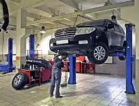

ВЕКТОР / Учебный кейс
Стук на неровностях

- Причина
- При проверке на подъёмнике обнаружили люфт стоек стабилизатора.
- Ремонт
- Заменили обе стойки стабилизатора.
- Результат
- Повторно проверили соединения подвески. Люфта в заменённых стойках больше нет.
Стоимость ремонта 8 400 ₽